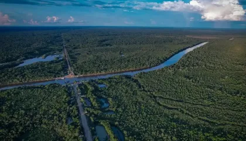

Curiosidades sobre a COP
Participação Global
 Acordo de Paris
Acordo de Paris

Amazônia Viva
A Conferência das Partes (COP) é o principal encontro global sobre mudanças climáticas, promovido anualmente pela ONU desde 1995.
Momentos históricos incluem o Protocolo de Quioto (1997), o Acordo de Paris (2015) e agora, a COP30, que será sediada na Amazônia, em Belém do Pará.
Primeira conferência em Berlim. Início das negociações globais.
Protocolo de Quioto: metas de redução obrigatórias.
Em Copenhague, primeira grande tentativa de acordo global vinculante após Quioto.
Acordo de Paris: limitar aquecimento global a 1.5ºC.
Em Glasgow, países atualizaram metas climáticas e reforçaram o compromisso com energias limpas.
Belém como sede, simbolizando o protagonismo da Amazônia no clima global.
Belém será a primeira cidade amazônica a sediar uma COP, destacando a importância da região na preservação climática global.
A cidade ganhará visibilidade e oportunidades em sustentabilidade, turismo verde e inovação.
Energia limpa e acessível.
Produção responsável e regenerativa.
Planejamento urbano ecológico.
Inclusão e equidade nas decisões.
Proteção dos biomas e recursos hídricos.
Conscientização ambiental e formação cidadã.
Acordo de Paris
A COP30 será um divisor de águas para o Brasil e o mundo. Belém se tornará o centro das decisões climáticas mais importantes do planeta.
Este site foi criado para informar, inspirar e conectar pessoas com um futuro mais verde.